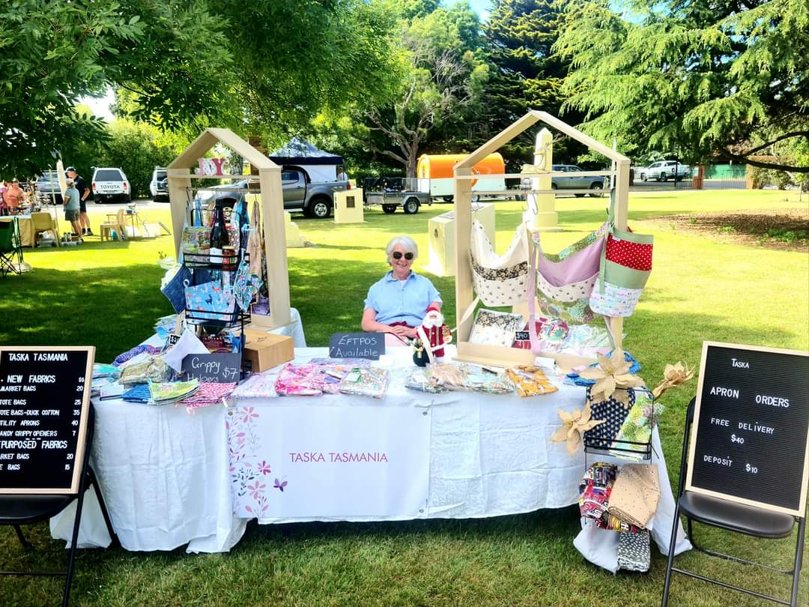
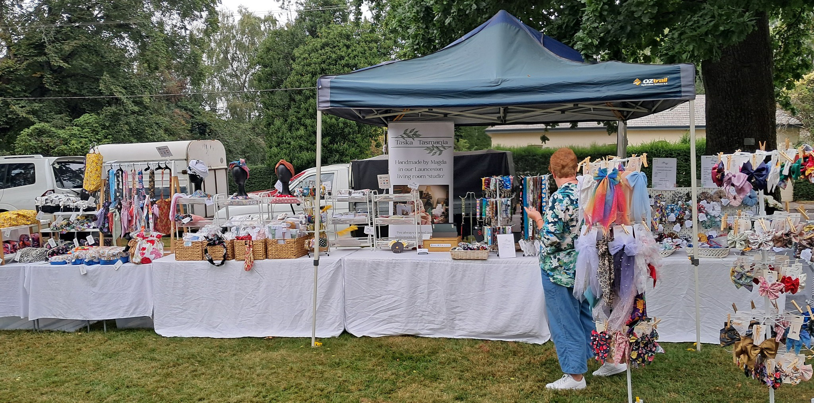
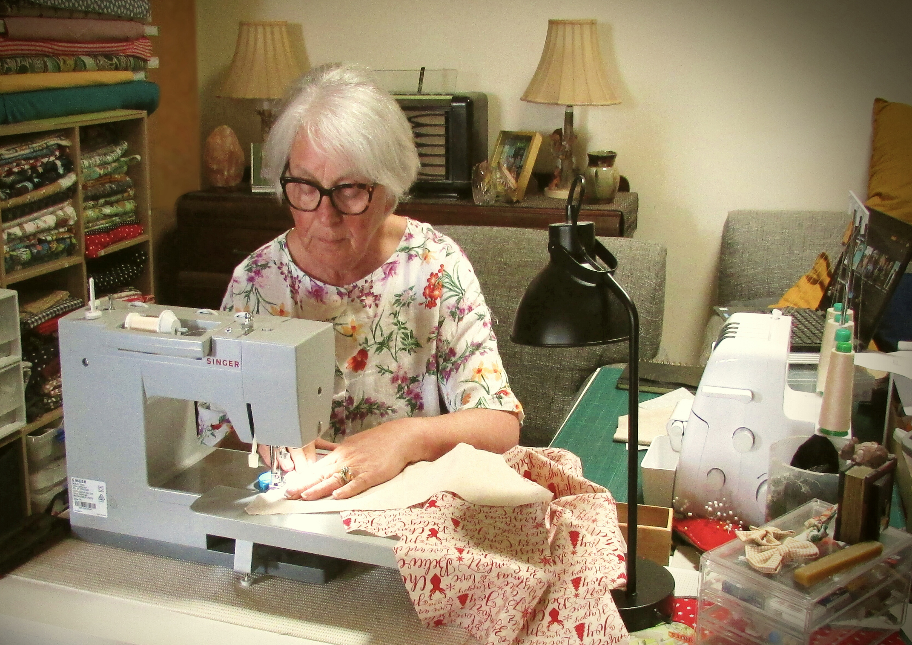
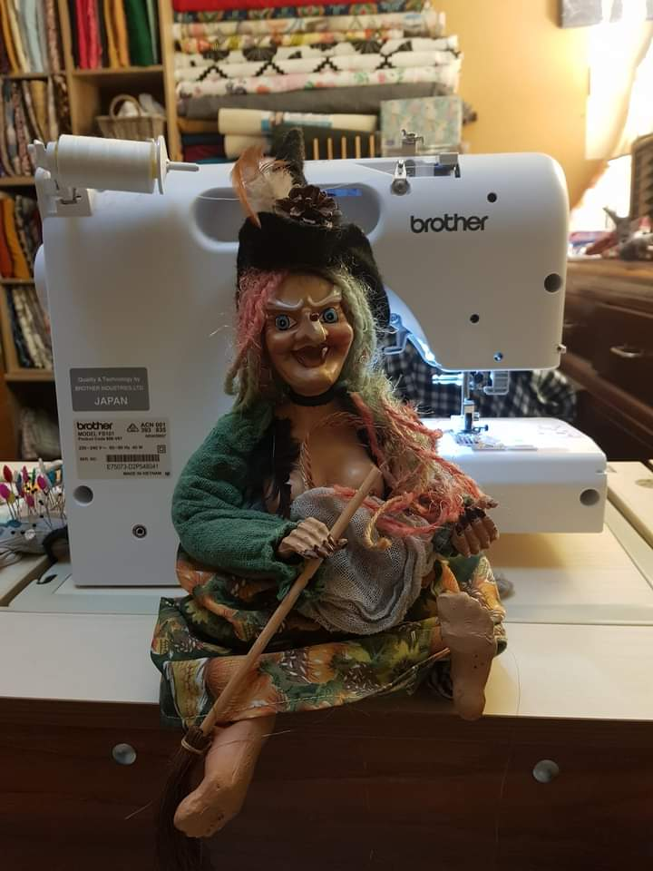

The Taska Tasmania Story
When Magda retired she realised that she was going to get very bored very quickly. She had a sewing machine which had seen little use because she couldn't find the time to sew, even though it was something she had always wanted to do.
Sewing became a bit of a passion ( “should have been doing this all my life” sort of thing ). A way of funding the hobby had to be found and Taska Tasmania was born. Initially the idea was to set up a table at one of the local craft markets and sell shopping bags.
Magda's heritage is Hungarian and that's where the name Taska Tasmania comes from - “ taska” is “bag” in Hungarian.

Turned out people weren't keen on shopping bags and the stall had to diversify. That lead to aprons …. with off-cut material used for scrunchies …. lanyards …. and what started out as a single table in Dec 2021 became a pop up shop hosted by Evandale Sunday Market – with occasional excursions.

Westbury Market
Everything Taska sells is handmade by Magda in what used to be our living room which has now graduated to being the Taska workshop. The hobby stall has grown into the craft popup shop we're immensely proud of.

Magda with her original Singer ( and sewing tables ), now long gone in favour of a Brother machine and other stuff.

(Not Magda :)